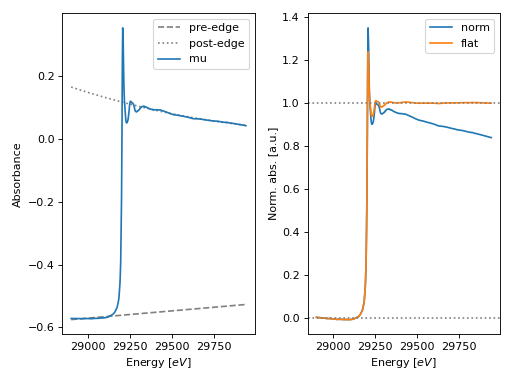

Normalize module¶
The normalize module offers the following functions to normalize a scan:
Function |
Description |
|---|---|
Calculates the absorption threshold energy of a scan. |
|
Pre-edge substaction and normalization of a scan. |
-
araucaria.xas.normalize.find_e0(group, use_mu_ref=False, update=False)¶ Calculates the absorption threshold energy of a scan.
- Parameters
- Return type
- Returns
Value of e0.
- Raises
TypeError – If
groupis not a valid Group instance.AttributeError – If attribute
energydoes not exist ingroup.AttributeError – If attribute
mu_refdoes not exist ingroupwhenuse_mu_ref = True.
Notes
The absorption threshold is calculated as the point with maximum derivative, with some checks to avoid selection of spurious glitches.
If
use_mu_ref=Falsethen the absorption threshold will be calculated for the scan attribute ofgroup, as determined by theget_mode()method. This is the default behavior.If
use_mu_ref=Truethen the absorption threshold will be calculated for thegroup.mu_refattribute.If
update=Truethe following attribute will be created ingroup:group.e0: absorption threshold energy \(E_0\).
Example
>>> from araucaria.testdata import get_testpath >>> from araucaria.io import read_dnd >>> from araucaria.xas import find_e0 >>> fpath = get_testpath('dnd_testfile.dat') >>> # extracting mu and mu_ref scans >>> group = read_dnd(fpath, scan='mu') >>> # find e0 of reference scan >>> find_e0(group, use_mu_ref=True) 29203.249
-
araucaria.xas.normalize.pre_edge(group, e0=None, nvict=0, nnorm=2, pre_range=[- inf, - 50], post_range=[100, inf], update=False)¶ Pre-edge substaction and normalization of a scan.
- Parameters
group (
Group) – Group containing the spectrum for pre-edge substraction and normalization.e0 (
Optional[float]) – Absorption threshold energy. If None it will seach for the value stored ingroup.e0. Otherwise it will be calculated usingfind_e0().nvict (
int) – Energy exponent for pre-edge fit with a Victoreen polynomial. The default is 0. See Notes for details.nnorm (
int) – Degree of polynomial for post-edge fit. The default is 2.pre_range (
list) – Energy range with respect to e0 for the pre-edge fit. The default is [-inf, -50].post_range (
list) – Energy range with respect to e0 for the post-edge fit. The default is [100,inf].update (
bool) – Indicates if the group should be updated with the normalization attributes. The default is False.
- Return type
- Returns
Dictionary with the following arguments:
e0: absorption threshold energy \(E_0\).edge_step: absorption edge step \(\Delta \mu(E_0)\).norm: array with normalized \(\mu(E)\).flat: array with flattened \(\mu(E)\).pre_edge: fitted pre-edge polynomial.post_edge: fitted post-edge polynomial.pre_coefs: coefficients for the pre-edge Victoreen polynomial.post_coefs: coefficients for the post-edge polynomial.pre_edge_pars: dictionary with pre-edge parameters.
- Raises
TypeError – If
groupis not a valid Group instance.AttributeError – If attribute
energydoes not exist ingroup.IndexError – If
e0is outside the range ofgroup.energy.
Warning
A warning will be raised if the degree of the post-edge polynomial is larger than 3.
Notes
Pre-edge substraction and normalization is performed as follows:
The absorption threshold is determined (if
e0orgroup.e0is not supplied).A Victoreen polymonial with energy exponent
nvictis fitted to the region below the edge, as specified bypre_range(2 coefficients are fitted):\(\mu(E) \cdot E^{nvict} = m \cdot E + b\)
A polymonial of degree
nnormis fitted to the region above the edge, as specified bypost_range(nnorm+ 1 coefficients are fitted).The edge step is deterimned by extrapolating both curves to e0.
A flattetned spectrum is calculated by removing the polynomial above the edge from the normalized spectrum, while maintaining the offset of the polynomial at
e0.
If
update=Truethe contents of the returned dictionary will be included as attributes ofgroup.Example
>>> from araucaria.testdata import get_testpath >>> from araucaria import Group >>> from araucaria.io import read_dnd >>> from araucaria.xas import pre_edge >>> from araucaria.utils import check_objattrs >>> fpath = get_testpath('dnd_testfile.dat') >>> group = read_dnd(fpath, scan='mu') # extracting mu and mu_ref scans >>> attrs = ['e0', 'edge_step', 'pre_edge', 'post_edge', 'norm', 'flat'] >>> pre = pre_edge(group, update=True) >>> check_objattrs(group, Group, attrs) [True, True, True, True, True, True]
>>> # plotting original and normalized spectrum >>> import matplotlib.pyplot as plt >>> from araucaria.plot import fig_xas_template >>> fig, ax = fig_xas_template(panels='xx') >>> line = ax[0].plot(group.energy, group.pre_edge, ... color='gray', ls='--', label='pre-edge') >>> line = ax[0].plot(group.energy, group.post_edge, ... color='gray', ls=':', label='post-edge') >>> line = ax[0].plot(group.energy, group.mu, label='mu') >>> text = ax[0].set_ylabel('Absorbance') >>> leg = ax[0].legend() >>> line = ax[1].plot(group.energy, group.norm, label='norm') >>> line = ax[1].plot(group.energy, group.flat, label='flat') >>> line = ax[1].axhline(0, color='gray', ls=':') >>> line = ax[1].axhline(1, color='gray', ls=':') >>> leg = ax[1].legend() >>> fig.tight_layout() >>> plt.show(block=False)
(Source code, png, hires.png, pdf)

{kind=link}
{kind=link}